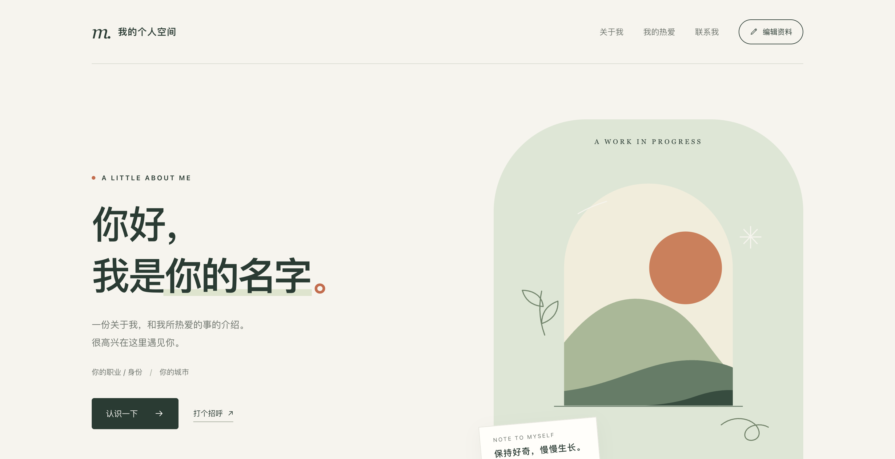

从一个想法，
到一次真实的体验。
保持好奇，持续动手。
往下看看我的作品SELECTED WORK
想法的具体形状 / 02
这一口，就是现在。

02NOTES ON MAKING
把问题看具体，
把想法做出来。
在实践中持续完善的探索方法。
先迈出可以体验的一步，
再让反馈推动下一步。
从场景中发现问题
谁会在什么时刻遇到什么困难？先把模糊的想法，写成一个具体的使用场景。
让流程先走得通
梳理目标、选择与反馈。思考 AI 在哪一步能提供帮助，哪里需要明确的规则。
做成可操作的原型
用页面、交互和视觉表达想法，让方案变成可以点击、修改和比较的体验。
带着反馈继续迭代
重新走一遍流程，发现不清楚、不顺畅的地方，再决定下一次改什么。
SAY HELLO
下一个想法，
从一句你好开始↗
关于 AI 产品、交互体验，或者一个有趣的小想法。
EMAIL179369971@qq.com